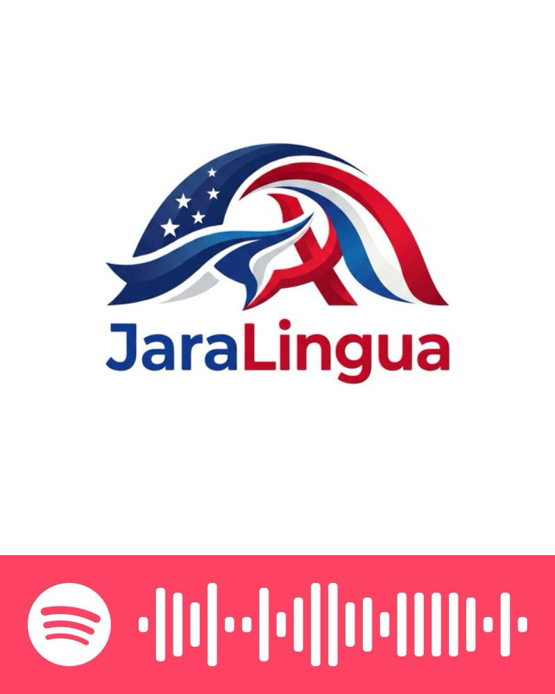

Disponible
Thèmes du cours
Le programme du Niveau 8 : conditionnel passé, subjonctif passé, argumentation B2, médias, IA, justice sociale et français oral authentique.
EntrerNuancer, débattre et analyser le monde contemporain.
Bienvenue dans l'espace du Niveau 8. Ce niveau approfondit le conditionnel passé, le subjonctif passé, les hypothèses irréelles, le discours rapporté avancé et le français oral authentique pour préparer une expression plus proche du B2.
Portail du cours
Le Niveau 8 réunit les thèmes, ateliers, évaluations, audios et ressources idiomatiques nécessaires pour travailler vers le B2.
Le programme du Niveau 8 : conditionnel passé, subjonctif passé, argumentation B2, médias, IA, justice sociale et français oral authentique.
Entrer
Espace réservé aux ateliers, débats, productions guidées et projets collaboratifs du Niveau 8.
Entrer
Audios longs, interviews et chroniques B1+/B2 liés aux questionnaires du Niveau 8.
Entrer
Carnet séparé du Niveau 8 avec suivi des évaluations et envoi des notes de prononciation.
EntrerÉvaluation contrôlée par le professeur : grammaire, lecture et écoute autour des thèmes 01 et 02.
Accéder
Banque d'expressions B2 pour débattre, nuancer, réfuter et reformuler.
Entrer
Accès au coin phonétique du Niveau 7, réutilisé pour le travail oral et l'intonation.
Entrer
Accès à une sélection de sites gratuits ou avec plan gratuit pour pratiquer le français B2 hors JaraLingua.
Entrer
Audios JaraLingua sur Spotify et sélection musicale francophone pour prolonger l’écoute hors classe.
EntrerLecture de base, source externe, opinion personnelle et exposition de 3 à 5 minutes avec support audiovisuel.
PréparerEntraînement de 50 points : compréhension orale, lecture, grammaire, lexique et production guidée.
S'entraîner